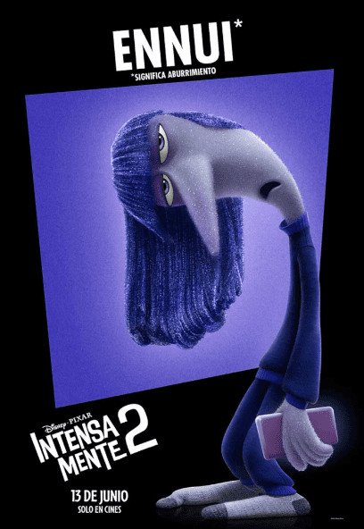

Es la representación genuina de la felicidad, el bienestar y la satisfacción
Ella es el sentimiento principal de Riley, ya que la niña es muy feliz.
Alegría se encarga que las experiencias y recuerdos de Riley sean felices.
Resulta que, con el cambio, todo se vuelve confuso para ella e incluso Alegría ya no puede
destacarse
todo el tiempo. Ella está representada por una chica animada con cabello azul.
La voz original de alegría es interpretada por la actriz Amy. Conoce más sobre ella aquí.
Ansiedad es una de las emociones nuevas que aparecen en la mente de Riley cuando llega a la
adolescencia.
Es naranja con un lenguaje de formas eléctricas, tensa y temblorosa. Siempre se ven los blancos
de
sus ojos y su cabello plumoso delata sus constantes movimientos.
La ansiedad es un sentimiento normal y que puede tener un propósito positivo, siempre y cuando
no se
apodere de nosotros. En el filme, toma el control y se muestra como una emoción que ayuda a
Riley a
evitar consecuencias dañinas para su futuro.
La voz original de ansiedad es interpretada por la actriz Maya Hawke. Conoce más sobre ella
aquí.
La Tristeza es la emoción melancólica, desanimada... Triste. Ella siempre mira las desventajas
de
las situaciones y no tiene energía para nada. El personaje es todo azul y lleva grandes gafas
redondas. Pero la Tristeza también muestra que es natural no ser feliz todo el tiempo, que las
personas pasamos por momentos difíciles y debemos aceptar que a veces estamos tristes. La voz
original de tristeza es interpretada por la actriz Phyllis Smith. Conoce más sobre ella
aquí.
Es rosa como el rubor, tiene una forma suave y redonda para evocar su reticencia y timidez. Es
un
gigante gentil, y desafortunadamente para él, quiere esconderse pero, es difícil de pasar por
alto.
Además, dicho tono el que se presenta en el
rostro de las personas cuando expresan esta emoción y se sonrojan. ¡A todos nos ha pasado!
Vergüenza es la única de las nuevas emociones adolescentes de Riley que es masculina, mientras
que
las demás son femeninas. También es el único de las emociones masculinas que tiene un corte de
pelo
completo, a diferencia de Temor, que solo tiene un mechón de cabello, y Furia, que no tiene
ningún
cabello.
La voz original de vergüenza es interpretada por el actor Paul Walter Hauser. Conoce más sobre
él aquí.
El personaje de Furia está realmente muy nervioso. ¡Siempre está enojado, ofuscado y a un paso
de
explotar! Debido a esto, termina siendo ansioso y apresurado, pero también es una emoción
necesaria
en algunos momentos. Es todo rojo.
La voz original de furia es interpretada por el actor Lewis Black. Conoce más sobre él
aquí.
Es de color verde azulado y tiene una forma más pequeña y de champiñón en brote para contrastar
con
el resto del elenco. Naturalmente, ella desearía ser más alta y menos infantil.
Está perpetuamente celosa de todo lo
que los demás tienen y no tiene miedo de suspirar por ello. El pensamiento de Envidia y su
fascinación por lo más nuevo y genial atrae su atención en todas direcciones y anhela lo que
Riley
no tiene. Naturalmente, desearía ser más alta y menos infantil.
Sus enormes ojos brillan cuando algo llama su atención.
La voz original de envidia es interpretada por la actriz Ayo Edebiri. Conoce más sobre ella
aquí.
Temor es un personaje totalmente lila que representa una de las emociones de Riley en su mente.
Es
cauteloso, temeroso y algo prudente. Él cree que es importante pensar antes de actuar en algunas
situaciones, pero en exceso, este miedo puede obstaculizar las actitudes de Riley.
La voz original de temor es interpretada por el actor Tony Hale. Conoce más sobre él aquí.
Desagrado está representado por una chica verde con náuseas y desordenada, pero es un personaje
muy
honesto en sus opiniones y precario, tanto que incluso impide que Riley se ponga en contacto con
lo
que Desagrado piensa que no es bueno.
La voz original de temor es interpretada por la actriz Liza Lapira. Conoce más sobre ella
aquí.

En 'Intensamente 2', Ennui es una figura color violeta oscuro que contrasta notablemente con
emociones más vibrantes y enérgicas.
Tiene la postura de un fideo flojo. Rara vez está lo suficientemente interesada como para
levantar
la cabeza por sí misma.
Su apariencia y tono simbolizan una falta de interés, la monotonía y una energía casi
inexistente,
por lo cual casi no se mueve y todo el tiempo esta con su teléfono como su juguete preciado. La
voz
original de temor es interpretado por la actriz Adèle Exarchopoulos. Conoce más
sobre
ella aquí.